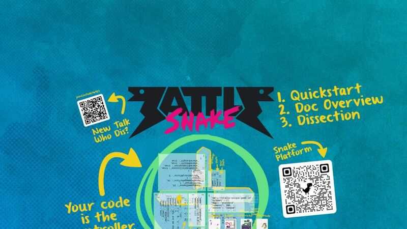
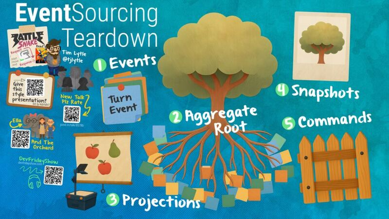
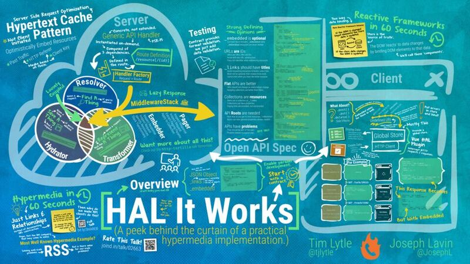
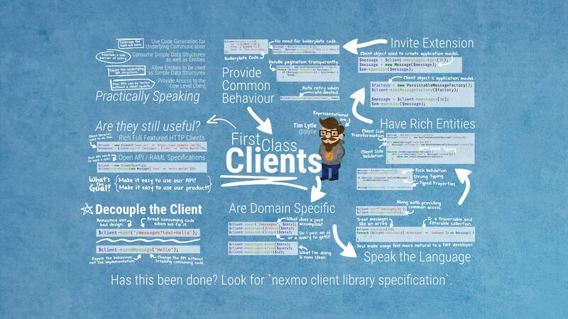
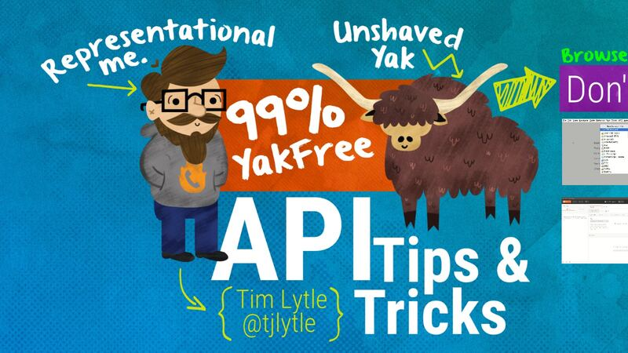
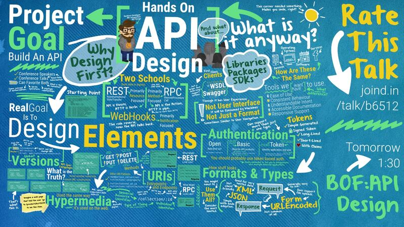

The tutorial slot for the php[tek] BattleSnake tournament: quickstart, docs overview, and a dissection of a snake.
1× · PHP Tek 2026
Full abstract
Are you ready for the 4th Annual BattleSnake Tournament this year? If not, this is the tutorial slot for you.
If you've never battle snaked in the past, we'll kick things off with: a quick explanation and quick start links for those who like to dig right in, an overview of the BattleSnake docs for those who prefer detailed requirements, and a 'snake dissection' of existing code for those who learn best by seeing examples in action.
After the intro, jump into coding whenever you?re ready, or if you've already thrown your exceptional snake into the fray, no worries, you can go heads down right away and tune out the introduction completely. I'll be around for the entire session to troubleshoot and guide as you build, enhance, and strategize.
This is the perfect opportunity to engage in practice rounds, refine your strategies, and see how your snake performs in real-time scenarios before the main competition.
One step closer to taking home the vaunted trophy snake!

Events, aggregates, projections, snapshots, and commands, taken apart so the pattern is easier to use well.
1× · PHP TEK 2025
Full abstract
Event sourcing is a powerful pattern that can fundamentally change how you approach building applications, when auditability and adaptability are needed. However, aspects of event sourcing can be misunderstood, and those misconceptions make it harder to understand and utilize effectively.
We'll take away the abstractions and focus on building an event sourced system without the use of an event sourcing library. This approach will help focus on the core concepts: what an event table is, how events are replayed when loading an aggregate root, what a projection is, and how snapshots work. Once we've established that base understanding, we'll take a look at how event sourcing libraries handle common concerns.
Along the way, we'll clear up some common points of confusion, and explore how this can be applied to existing systems, not just greenfield projects. You'll leave with a clear foundational understanding of event sourcing, so you can decide if this pattern is right for your next project.

Unit, integration, contract, or end-to-end: the question that matters is what a test actually buys you.
1× · PHP TEK 2025
Full abstract
The differences between unit tests, integration tests, contract tests, end-to-end tests, and behavior tests-and which type is best to use-are often debated. Principles like "don't mock what you don't own" or "test behavior, not implementation" are often cited in those conversations. But there's one key question we should always ask when writing tests: is this a valuable test?
So let's put those other concepts aside and ask a simple question as we look at some real-world examples: "What is the value of this test?" Answering that can lead to more nuanced questions. Does this test continue to deliver value over time? How much value comes from the act of writing this test? Are there ways to increase the immediate value as well as the long term value?
Join me as we rethink testing-not in terms of types and categories, but in terms of the practical, meaningful value that testing brings to our codebases and our teams.

A keynote on swapping the ownership model for stewardship: in code, career, and community.
3× · PHP TEK 2025 · Longhorn PHP 2023 · php[tek] 2023
Full abstract
We may adopt a perspective of ownership around the code we write and maintain, the career path we find ourselves on, and our position in the community around us.
Intentionally shifting that perspective away from the ownership model to an alternative model can lead to finding opportunity where before there was frustration and finality.
And it can impact more that just our code. It can bring a powerful new perspective to our career, our community, and even this very conference.

Docker for the everyday stuff that is not deployment: runtimes, dev tools, and throwaway utilities.
3× · CascadiaPHP 2024 · php[tek] 2024 · JestPHP
Full abstract
Though it's the common use case, deploying your application using docker - or even just using docker to power your local development stack - may seem a bit daunting at first. And it may require some changes you're not yet ready, or able, to make. But if you want to get started with docker, there are plenty of uses that aren't deployment.
In this 99% Yak-Shaving™ Free session, we'll focus on the ones that require little (or no) setup, and build a solid understanding of docker itself. These day-to-day use cases will make you docker confident, and ready to tackle things like deployment with docker in the future.
Bring your laptop, and you'll be using some of them before I stop talking. And if you find the docker vrs virtual machine distinction a little fuzzy, don't worry - this talk will start by clearing that right up, and do it with sock puppets.
You Can Handle APIs: Introducing API Handler
A no-slides, just-code introduction to API Handler, a PSR-15 middleware pattern for building APIs.
1× · php[tek] 2024
Full abstract
This session is a 'no slides, just code' introduction to a newly open sourced pattern that has changed the way we think about API development.
No, it's not yet another framework. It's a PSR-15 compatible middleware implementation paired with a set of intuitive interfaces designed to streamline API construction.
For legacy applications, the interfaces allow easy integration into your existing codebase, eliminating the usual configuration headaches of API frameworks. And if you're on the path of crafting something new, imagine building a core stack that's feather-light, powered by nothing more than PSR-7 and PSR-15 implementations.
In this hands-on session you'll see firsthand how to implement this pattern in various scenarios, from breathing new life into old systems to laying the foundations of modern, lightweight applications.
HTTP Tortilla: Make PSR-7 Burritos
Wrapping PSR-7 request and response objects so the framework pieces you already use fit together.
1× · php[tek] 2023
Full abstract
PSR-7 - HTTP Request / Response objects - provides a great set of common interfaces which allow you to leverage different bits of frameworks and component libraries while building web applications. Even better, there are so many implementations, i likely a library you already use has one.
However, the general behavior of a PRS-7 implementation isn't tailored to the context of your application. But writing your own request / response implementation just for some syntactic sugar seems like a maintenance headache.
Built by the development team at PhoneBurner, HTTP Tortilla is a set of traits that make it easy to wrap any existing PSR-7 implementation and add your own functionality. But that's only where it starts. By providing a simple way to satisfy the interfaces you can now easily give existing classes - like exceptions - PSR-7 abilities.

How PhoneBurner uses HAL as a hypermedia format, the constraints on it, and the client-side cache pattern it enables.
1× · php[tek] 2023
Full abstract
HAL is a lightweight yet useful hypermedia format. Wl talk about how we're using it at PhoneBurner, the constrains we've put on it, and the patterns that we're using to implement APIs both server and client side. We'll also cover the powerful cache pattern that allows client side request optimization to be handled server side.
If you're looking for practical examples of how to implement and benifit from hypermedia when developing the internal APIs that power your own client side applications, this is the talk for you.
HTTP Patterns: PSR 7 & 15 By Example
A hands-on look at HTTP Messages and HTTP Handlers and how to properly leverage them.
1× · Dutch PHP 2021 (online)
Full abstract
Chances are your code already uses one of the HTTP PSRs in some way. In this 'no slides, just code' session we'll take a hands on look at how HTTP Messages (PSR-7) and HTTP Handlers (PSR-15) work, and how they can be properly leveraged. HTTP messages provide a considerable advantage over global variables, and their immutability actually makes it easier to confidently modify an incoming request or an outgoing response in your web application. HTTP handlers are a common concept in micro-frameworks, and PSR-15 provides a way to create reusable framework-agnostic code. But that's not all it provides. The HTTP handler interface can be used to inject the concept of middleware into an existing application without having to introduce a new framework. Or to easily build a lightweight application without any framework. Take a guided tour through both PSRs, and find out how you can used them effectively in your current codebase.
What you'll learn from this talk:
- the value in immutable HTTP Request objects
- how to evolve an HTTP Request object
- how to extend a library's HTTP Request object
- how a middleware stack works
- how easy it is to use PSR-7 & PSR-15 without any framework

Do consistent API patterns and good HTTP clients make the API-specific client library obsolete?
1× · php[tek] 2019
Full abstract
As a variety of well-supported HTTP clients meets the rise of consistent patterns applied to API design, are we essentially removing the usefulness of an API specific client library?
Standards like HAL and Siren address common parts of API response. Description languages like the OpenAPI Spec define a way to communicate the behavior and structure of an API. With generic libraries that consume well-known API formats and code generators that create API specific bindings is there any value in a bespoke language-specific API wrapper?
In this session, we’ll consider how client libraries can help create a better developer experience for existing APIs and explore what a long term vision of client libraries may be, as more new APIs embrace modern patterns and standards.
Hypermedia Without The Hype
Hypermedia and HATEOAS without the skynet: applying what works for human navigation of the web to APIs.
1× · php[tek] 2019
Full abstract
No, it’s not skynet. Hypermedia – and the concept of HATEOAS – may seem a little intimidating at first glance. But it’s not so much about generic API clients that can crawl any compliant API, and more about just applying concepts that have worked well for human navigation of the web to our APIs.
In this session, we’ll consider the benefits of avoiding client-side path construction. We’ll also take a look at how applying some simple hypermedia concepts to our request/response design can open up significant potential for improvement, and greatly simplify the code consumers of our API have to write.
Patterns For API Development
Common code patterns used when building APIs with PHP, with examples.
1× · php[tek] 2019
Full abstract
PHP is no stranger to APIs. In the PHP ecosystem, there are API related libraries, API micro-frameworks, full-fledged API frameworks, and more.
While other sessions cover general API design patterns, in this session we’ll consider examples of common code patterns used when building APIs with PHP. We’ll explore some of the common patterns used in popular API frameworks – as well as the patterns found in some of the API related PSRs.
Versioning: Every Way Is Wrong
API versioning: you do not want to do it, and when you do, someone will say you did it wrong.
1× · php[tek] 2019
Full abstract
There are a few certainties when it comes to versioning APIs: It’s not something you want to do. When you finally do it, you’re going to do it wrong (according to someone).
So is it possible to avoid it entirely? If you have to version your API, the overall design philosophy you’ve picked needs to influence how you go about that process.
In this session, we’ll consider some of the common versioning techniques, how they fit with various API design patterns, and what to look out for when versioning an API. We’ll also explore ways to avoid versioning while still changing an API.
URIs – The Path To Your APIs
URIs are the path to your API data, and different design patterns use them very differently.
1× · php[tek] 2019
Full abstract
While the request and response encapsulate your API’s data, URIs provide the path to that data. But different API design patterns use URIs in different ways. In some, the API paths are nothing more than the address all data flows to and from. In others they communicate far more, describing relationships and even aspects about the request.
In this session, we’ll explore those differences, and the friction introduced when APIs aren’t consistent about usage. We’ll also consider some patterns and anti-patterns of URI path structure, and how to define a path structure that’s future friendly.
API Request & Response Formats
Requests and responses are the core of an API. Pick formats that are natural for the consumer.
1× · php[tek] 2019
Full abstract
Requests and responses are the core of an API, and a significant part of the interface you’re designing. The code that consumes your API needs to create the request, and parse the response, so it’s worth considering what formats are natural for those consumers, not just what’s natural for the API code we’ll be writing.
But the consuming code isn’t the only thing to consider. If you have to support multiple formats, how do you do that consistently? What techniques can be used in APIs that need to handle binary data as well?
In this session, we’ll take a look at common request and response formats. We’ll also consider the advantages of each, not just in terms of the consuming code, but also use case and context. Finally, we’ll explore the general structure of API requests and responses for different API design patterns.
Authentication: The Token API Talk
How to authenticate API users, when you do not need to, and what each method trades off.
1× · php[tek] 2019
Full abstract
As you design an API you’ll run into a few questions. How should you authenticate your users? Are there cases where you don’t even need to? There are a variety of authentication methods, which one is the best? It’s time to talk about API security – at least one aspect of it.
Each method has strengths and weaknesses, and the right authentication method depends on a few things: the kind of API you’re building, the users that consume it, and the context of the authentication. A client-side browser application shouldn’t use the same authentication mechanism as an API that serves data to other web services.
In this session, we’ll cover various authentication methods, and gain an understanding of the similarities and differences of the underlying mechanisms. We’ll also consider various use cases and the authentication concerns they introduce.
APIs Are Everywhere
We consume APIs every day as SDKs and libraries. The same design principles apply to the web APIs we build.
1× · php[tek] 2019
Full abstract
When it comes to web APIs, we tend to forget that we consume various APIs (other people’s code) every day in the form of SDKs, libraries, development tools, etc. The same design principles that make the high-quality non-web APIs we consume easy to work with can be applied to the web APIs we build.
In this session we’ll explore what attributes are common to the tools, SDKs, libraries – the other APIs – we use on a daily basis, and how we can apply them to the web APIs we’re building.

API tools, services, and techniques that need little or no setup and that you can use before I stop talking.
3× · php[world] 2018 · Cascadia PHP · Longhorn PHP 2018
Full abstract
API tools, services, and techniques abound, but in this 99% Yak-Shaving™ Free session, we'll focus on the ones that require little (or no) setup, and that you can be using before I stop talking.
Whether you're building or consuming APIs, there will be something for you. If you're new to APIs, you'll leave with a bunch of things you can use right now. If you've been doing this for a while, you'll probably see a new way to simplify something that's bugged you in the past.
Birds of a Feather: API Design
A roundtable on API development and API design.
1× · php[world] 2018
Full abstract
Join this Birds of a Feather roundtable to discuss various topics related to API Development and API Design.

A workshop on going from an API-first decision to an API people actually want to use.
3× · php[world] 2018 · Longhorn PHP 2018 · php[world] 2017
Full abstract
Building your next mobile app, SaaS product, or web app using an API first philosophy is a great decision. It can allow your team to develop in parallel, enable expansion to multiple platforms, and create opportunity for outside integration. But once you've made that decision, what's next? How do you actually do it?
What options are there for authentication? How do you reset a password with an API? Is hypermedia worth considering for internal APIs? How do you handle unauthenticated access from a client side javascript application? What format is best for API requests and responses? Should you version your API now, or later?
In this hands on workshop we'll talk about all those questions, and the answers that give your API a solid foundation. Because your API may start out serving the needs of internal mobile clients, or single page web apps, but one day (and probably sooner than you think) you'll be turning it into a public API.
Building PHP Daemons & Long Running Processes
Stop abusing cron. Daemonize a PHP script that responds responsibly to process signals.
7× · WavePHP 2018 · php[world] 2017 · ZendCon 2016 · OpenWest 2016 · Lone Star PHP 2016 · Nomad PHP 2015 · php[tek] 2015
Full abstract
In this hands on workshop, you'll learn how to stop abusing cron, and easily daemonize a php script that responds responsibly to process signals. There are things you don't want to, or can't do inside a web request. It could be a task that needs to be retired if it fails, maybe one that takes a significantly long time to process, or multiple jobs that need to be processed over time. Whether you're sending an email, processing a video, or consuming Twitter's streaming API - you should be using a separate process, and probably a daemon.
A contract developer for ten years shares a philosophy of contracting and the clients you will run into.
6× · PHP Unicorn (online) · Northeast PHP 2016 · OpenWest 2016 · Lone Star PHP 2016 · php[tek] 2014 · php[tek] 2012 uncon
Full abstract
Thinking about quitting that desk job and enjoying the freedom of contract development? Already have?
A contract developer for 10 years, I’ll share my philosophy on contracting, some tips on how be successful, and a look at some of the clients you’ll run into.
While my style of contracting may not work for you, this talk will at least challenge you to consider not just how you’re marketing your product, but what your product really is, how you charge for it, and what that means long term.
Already a contract developer? I’ll give some tips on avoiding the painful parts of the job, setting and negotiating your rate, and one simple way to get great clients and keep them happy.
Considering contracting? Meet some of the clients you’ll certainly come across, a few warning signs and things to watch out for, and what needs to happen in each case before you can have a successful relationship.
Robust Second-factor Authentication with PHP
Single-use codes, phone verification, apps, and physical devices: how each second factor works and what it costs you.
4× · Nomad PHP 2016 · ZendCon 2016 · OpenWest 2016 · php[tek] 2016
Full abstract
Single-use codes delivered by email and SMS, mobile phone verification using automated phone calls and installed applications, or standalone physical devices – there’s more than one way to do 2nd-factor authentication (2FA).
There are benefits – and downsides – to each. Learn how each one works and what is best for you and your users. Avoid some common mistakes when rolling out 2FA, and take a look at how you can add one, or many, to your application’s login flow.
The API Toolbox
The tools worth having around when you build and consume APIs.
4× · ScotlandPHP 2016 · Northeast PHP 2016 · ConFoo 2015 · Madison PHP 2014
The Wonderful World of APIs
A tour of the wide world of web APIs.
1× · php[tek] 2015
Crons, Queues, and Daemons. Oh my!
When to use a cron, when to use a queue, and when you really need a daemon.
1× · LVPHP 2013